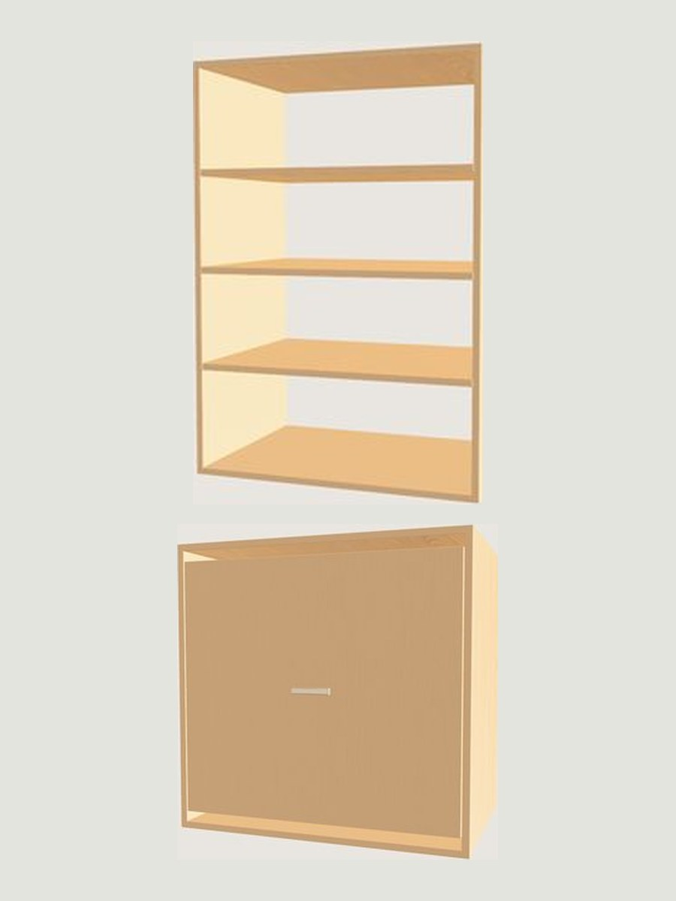

Tilt-out hamper with shelves over it
The same tilt-down basket, with folded storage over it instead of hanging.
What this section needs
| Hamper height | 26" to 32". 28" as drawn. |
|---|---|
| Shelves above | 4, adjustable on 32mm centres |
| Clearance | The front needs clear air to swing down and out |
| Where it goes | Laundry rooms, linen closets, a kid’s reach-in |
| Depth | 16" to 24" |
| Section width | 24" to 36" |
Every one of these feeds the price. Change a number in the 3D builder and the parts list and the total change with it.

Hamper with folded storage over it
The same tilt out basket, with four adjustable shelves above instead of a rod. This is the laundry room and linen closet version, and it is also the right answer in a child’s reach in where nothing is long enough to need hanging.
Towels, sheets, cleaning things and spare linen go above. Dirty laundry goes below. The whole job of that closet happens in one section.
Depth
A hamper basket is 18 inches wide and wants a 24 inch deep section in a bedroom closet. In a laundry room or a linen closet, 16 inches is usually what the room gives you, and the basket still fits.
Shelves above are 14 to 16 inches. Folded towels are about 12 inches across, so 14 holds them squarely.
Clearance, again
The front needs clear air in front of it to swing. In a narrow laundry room, check the door swing and the machine doors before deciding which section the hamper goes in. We check it at the measure, and the builder checks it as you draw.
Questions about this layout
If yours is not here, the answer is a phone call away. Ask us directly.
Where does this layout belong?
Laundry rooms, linen closets, and children’s reach ins where nothing is long enough to need hanging.
How many shelves go above it?
Four as drawn, adjustable on 32mm centres. You can take it to five or six if what you store is shallow.
How deep does it need to be?
Twenty four inches in a bedroom closet. Sixteen is usually what a laundry room gives you, and the 18 inch basket still fits.
What about the door swing?
That is the thing to check in a narrow laundry room. The hamper front swings down and out, so we place it clear of the room door and the machine doors.
Can I have both hanging and shelves over a hamper?
In one 28 inch gap, no, there is not the height for both. Put the hamper in one section and the hanging in the next.
Draw it, and see the price.
The builder opens with this layout already in a section. Change the width, the finish and the hardware and the total moves with it.